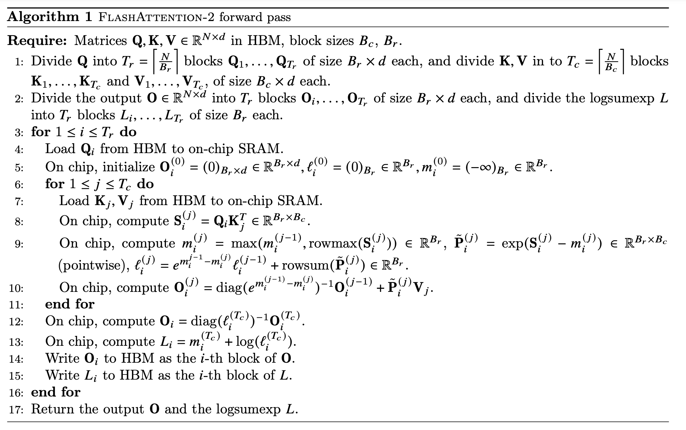

<!doctype html><html lang="en"><head><meta charset="utf-8"><meta name="viewport" content="width=device-width, initial-scale=1">
<title>flash_attention</title><link rel="stylesheet" href="../../learn.css"><style>.nb pre{background:var(--bg-inset);border:1px solid var(--border);border-radius:10px;padding:12px 14px;overflow-x:auto;font-size:.85rem}
.nb .cell{margin:14px 0}.nb .in{border-left:3px solid var(--accent);padding-left:10px}.nb .out{border-left:3px solid var(--accent2);padding-left:10px;margin-top:6px}
.nb img{max-width:100%;border-radius:8px}.nb table{border-collapse:collapse}.nb td,.nb th{border:1px solid var(--border);padding:4px 8px}.crumb{font-size:.85rem;color:var(--text-dim)}
.attrib{font-size:.8rem;color:var(--text-dim);border-top:1px solid var(--border);margin-top:30px;padding-top:10px}</style></head><body><nav class="topnav"><a class="home" href="../../index.html">Learn</a><div class="links"><a href="../../lectures.html" class="here">GPU MODE Lectures</a><a href="../../index.html">All chapters</a><a href="../../notes.html">Notes library</a></div><div class="spacer"></div><button class="theme-btn" id="themeBtn">◐ theme</button></nav><main>
<div class="crumb"><a href="../../lectures.html">GPU MODE Lectures</a> › lecture_012/flash_attention.ipynb</div><h1>flash_attention</h1>
<article class="nb"><div class="cell md"><h1>Flash Attention in Torch, Numba and Cuda</h1>
<p>We implement in three different ways the Flash Attention forward algorithm from the <a href="https://arxiv.org/pdf/2307.08691">Flash Attention 2 paper</a>. Namely using:</p>
<ol>
<li>Torch</li>
<li>Numba</li>
<li>Cuda</li>
</ol>
<ul>
<li>
<p>We build the kernel for <code>d=128</code> and design it so that each block runs one iteration of the flash attention outer loop.</p>
</li>
<li>
<p>We then do some basic performance analysis, showing that on small matrices it performs like torch sdpa and disuss register spiling profiling.</p>
</li>
<li>
<p>Finally we run our custom kernel with <a href="https://developer.nvidia.com/cuda-python">Cuda-python</a> and <a href="https://lightning.ai/docs/thunder/latest/">Thunder</a>.</p>
</li>
</ul>
<p></p>
<h2>Utils</h2></div><div class="cell"><div class="in"><pre><code>import numba
from numba.cuda import as_cuda_array as ca
from pathlib import Path
import math
import torch
import sys

sys.path.insert(0, &quot;..&quot;)
from utils import load_cuda, get_sig, print_cuda_info

TEST_DIMS = [
    (32, 32),
    (128, 64),
    (512, 512),
    (1024, 512),
]

def get_loaded_cuda_module(fname, verbose=False):
    cuda_src_path = f&quot;./{fname}.cu&quot;
    torch_src_path = f&quot;./torch_extension_template.cu&quot;
    cuda_src = Path(cuda_src_path).read_text()
    cuda_src += Path(torch_src_path).read_text()
    cuda_src = cuda_src.replace(&quot;your_function_name&quot;, fname)
    cpp_src = get_sig(fname, cuda_src)
    return load_cuda(cuda_src, cpp_src, [fname], verbose=verbose)


def check_close(O, O_expected, L=None, L_expected=None, atol=5*1e-5):
    O_diff = (O - O_expected).abs().max()
    print(&quot;Max absolute difference:&quot;)
    if atol:
        assert O_diff &lt; atol, f&quot;O diff too large: {O_diff} &gt; {atol=}&quot;
    print(&quot;O: &quot;, O_diff)
    if L is not None:
        L_diff = (L.squeeze() - L_expected).abs().max()
        if atol:
            assert L_diff &lt; atol, f&quot;L diff too large: {L_diff} &gt; {atol=}&quot;
        print(&quot;L: &quot;, L_diff)

# Test tensors
def get_test_tensors(N_inp, N_out, d):
    Q = torch.randn(N_out, d).contiguous().to(&quot;cuda&quot;)
    K = torch.randn(N_inp, d).contiguous().to(&quot;cuda&quot;)
    V = torch.randn(N_inp, d).contiguous().to(&quot;cuda&quot;)
    scaling = 1.0 / math.sqrt(d)

    # Get expected O
    O_expected = torch.nn.functional.scaled_dot_product_attention(Q, K, V)
    S = (Q @ K.T) * scaling  # shape: (N_out, N_inp)
    L_expected = torch.logsumexp(S, dim=-1)
    return Q, K, V, scaling, O_expected, L_expected

# Check test tensors
N_inp = 512
N_out = 512
d = 128

Q, K, V, scaling, O_expected, L_expected = get_test_tensors(N_inp, N_out, d)
check_close(O=torch.softmax(Q @ K.T * scaling, dim=-1) @ V, O_expected=O_expected)</code></pre></div><div class="out"><pre>Max absolute difference:
O:  tensor(1.3411e-07, device=&#x27;cuda:0&#x27;)
</pre></div></div><div class="cell md"><h2>Torch</h2></div><div class="cell"><div class="in"><pre><code>def flash_attention_torch(Q, K, V, O, L, N_inp, N_out, d) -&gt; None:
    B_c = 16
    B_r = 16
    T_c = (N_inp + B_c - 1) // B_c
    T_r = (N_out + B_r - 1) // B_r

    scaling = 1 / math.sqrt(d)

    # Q and O L split into T_r; K, V in T_c blocks
    for i in range(T_r):
        Q_i = Q[i * B_r : (i + 1) * B_r]
        O_i = torch.zeros(B_r, d)
        L_i = torch.zeros(B_r, 1)
        m_i = torch.full((B_r, 1), -math.inf)
        last_m_i = m_i
        for j in range(T_c):
            K_j = K[j * B_c : (j + 1) * B_c]
            V_j = V[j * B_c : (j + 1) * B_c]
            S_i = scaling * (Q_i @ K_j.T)
            m_i = torch.maximum(m_i, S_i.max(dim=-1, keepdim=True).values)
            P_i = torch.exp(S_i - m_i)
            L_i = torch.exp(last_m_i - m_i) * L_i + P_i.sum(dim=-1, keepdim=True)
            O_i = torch.exp(last_m_i - m_i) * O_i + P_i @ V_j
            last_m_i = m_i
        O_i = (1.0 / L_i) * O_i
        L_i = m_i + torch.log(L_i)
        O[i * B_r : (i + 1) * B_r] = O_i
        L[i * B_r : (i + 1) * B_r] = L_i</code></pre></div></div><div class="cell"><div class="in"><pre><code>O_torch_loop = torch.zeros(N_out, d)
L_torch_loop = torch.zeros(N_out, 1)

flash_attention_torch(Q.to(&quot;cpu&quot;), K.to(&quot;cpu&quot;), V.to(&quot;cpu&quot;), O_torch_loop, L_torch_loop, N_inp, N_out, d)

check_close(
    O_torch_loop.to(&quot;cuda&quot;), 
    O_expected,
    L_torch_loop.to(&quot;cuda&quot;),
    L_expected
)</code></pre></div><div class="out"><pre>Max absolute difference:
O:  tensor(3.2783e-07, device=&#x27;cuda:0&#x27;)
L:  tensor(9.5367e-07, device=&#x27;cuda:0&#x27;)
</pre></div></div><div class="cell md"><h2>Numba</h2>
<p>Tiling strategy: threads cooperate loading shared arrays in each <code>i, j</code> loop and write their own entries of <code>l_i, m_i, O_i</code></p>
<h3>All arrays in shared memory</h3></div><div class="cell"><div class="in"><pre><code>@numba.cuda.jit
def flash_attention_numba_all_smem(Q, K, V, scaling: numba.float32, L, O, N_out, N_inp):
    B_c = 16
    B_r = 16
    T_c = (N_inp + B_c - 1) // B_c
    T_r = (N_out + B_r - 1) // B_r
    inp_dtype = K.dtype
    tid_x = numba.cuda.threadIdx.x
    tid_y = numba.cuda.threadIdx.y

    Q_i = numba.cuda.shared.array((B_r, d), inp_dtype)
    K_j = numba.cuda.shared.array((B_c, d), inp_dtype)
    V_j = numba.cuda.shared.array((B_c, d), inp_dtype)
    S = numba.cuda.shared.array((B_r, B_c), inp_dtype)
    # These can be in registers but wont fit too large
    l_i = numba.cuda.shared.array((B_r,), inp_dtype)
    m_i = numba.cuda.shared.array((B_r,), inp_dtype)
    O_i = numba.cuda.shared.array((B_r, d), inp_dtype)

                 
    for i in range(T_r):
        for ii in range(tid_y, B_r, numba.cuda.blockDim.y):
            for dd in range(tid_x, d, numba.cuda.blockDim.x):
                Q_i[ii, dd] = Q[ii + i * B_r, dd]
                O_i[ii, dd] = 0
            l_i[ii] = 0
            m_i[ii] = -math.inf
        numba.cuda.syncthreads()

        for j in range(T_c):
            for jj in range(tid_y, B_c, numba.cuda.blockDim.y):
                for dd in range(tid_x, d, numba.cuda.blockDim.x):
                    K_j[jj, dd] = K[jj + j * B_c, dd]
                    V_j[jj, dd] = V[jj + j * B_c, dd]

            # S[ii][jj] = scaling * (Q_i @ K_j.T)
            numba.cuda.syncthreads()
            for ii in range(tid_x, B_r, numba.cuda.blockDim.x):
                for jj in range(tid_y, B_c, numba.cuda.blockDim.y):
                    S_ij = 0
                    for dd in range(d):
                        S_ij += Q_i[ii, dd] * K_j[jj, dd]
                    S_ij = scaling * S_ij
                    S[ii][jj] = S_ij

            numba.cuda.syncthreads()
            for ii in range(tid_y, B_r, numba.cuda.blockDim.y):
                m = m_i[ii]
                last_m = m
                for jj in range(B_c):
                    m = max(m, S[ii][jj])
                m_i[ii] = m
                l = math.exp(last_m - m) * l_i[ii]

                for dd in range(tid_x, d, numba.cuda.blockDim.x):
                    O_i[ii, dd] *= math.exp(last_m - m)
                for jj in range(B_c):
                    P_ij = math.exp(S[ii][jj] - m)
                    l += P_ij
                    for dd in range(tid_x, d, numba.cuda.blockDim.x):
                        O_i[ii, dd] += P_ij * V_j[jj, dd]
                l_i[ii] = l
                
        for ii in range(tid_y, B_r, numba.cuda.blockDim.y):  
            for dd in range(tid_x, d, numba.cuda.blockDim.x):
                O[ii + i * B_r, dd] = O_i[ii, dd] / l_i[ii]
            L[ii + i * B_r] = m_i[ii] + math.log(l_i[ii])
        
        numba.cuda.syncthreads()</code></pre></div></div><div class="cell"><div class="in"><pre><code>
block_dim_x = 32
block_dim_y = 16

for N_inp, N_out in TEST_DIMS:

    Q, K, V, scaling, O_expected, L_expected = get_test_tensors(N_inp, N_out, d)
    O_all_smem = torch.zeros(N_out, d, device=&quot;cuda&quot;).contiguous()
    L_all_smem = torch.zeros(N_out, device=&quot;cuda&quot;)
    tpb = (block_dim_x, block_dim_y)
    grid = (1,)
    flash_attention_numba_all_smem[grid, tpb](Q, K, V, scaling, L_all_smem, O_all_smem,  N_out, N_inp)
    torch.cuda.synchronize()
    check_close(
        O_all_smem, 
        O_expected,
        L_all_smem,
        L_expected,
    )</code></pre></div><div class="out"><pre>/opt/conda/lib/python3.12/site-packages/numba/cuda/dispatcher.py:536: NumbaPerformanceWarning: Grid size 1 will likely result in GPU under-utilization due to low occupancy.
  warn(NumbaPerformanceWarning(msg))
</pre><pre>Max absolute difference:
O:  tensor(4.7684e-07, device=&#x27;cuda:0&#x27;)
L:  tensor(4.7684e-07, device=&#x27;cuda:0&#x27;)
Max absolute difference:
O:  tensor(3.8743e-07, device=&#x27;cuda:0&#x27;)
L:  tensor(9.5367e-07, device=&#x27;cuda:0&#x27;)
Max absolute difference:
O:  tensor(4.7684e-07, device=&#x27;cuda:0&#x27;)
L:  tensor(1.4305e-06, device=&#x27;cuda:0&#x27;)
Max absolute difference:
O:  tensor(4.0233e-07, device=&#x27;cuda:0&#x27;)
L:  tensor(1.9073e-06, device=&#x27;cuda:0&#x27;)
</pre></div></div><div class="cell md"><h3>Moving <code>m_i</code>, <code>l_i</code>, <code>O_i</code> to registers</h3>
<p>Current shared-memory usage across threads:</p>
<pre><code>Shar = (B_r * d * 4) # Q_i
+ (B_c * d * 4) # K_j
+ (B_c * d * 4) # V_j
+ (B_r * B_c * 4) # S
= ~25 KB
</code></pre>
<p>Current block-shared accumulators (<code>m_i</code>, <code>l_i</code>, <code>O_i</code>):</p>
<pre><code>Loc = 4 * (B_r + B_r + (B_r * d)) = 8320 B ≈ 8 KB
</code></pre>
<p>Total shared usage: <strong>~33 KB</strong> (fine for 1 block/SM).</p>
<hr>
<p><strong>Idea:</strong> Move <code>m_i</code>, <code>l_i</code>, <code>O_i</code> to <em>per-thread</em> locals to fit in registers.</p>
<p>Problem: Full-size per-thread arrays would need</p>
<pre><code>Loc * 32 * 16 ≈ 4 MB &gt; 256 KB register memory per SM
</code></pre>
<hr>
<p><strong>Optimization:</strong> With tiling <code>tpb = (32, 16)</code>:</p>
<ul>
<li>Each thread handles only<br>
<code>d // blockDim.x = 4</code> columns in <code>x</code><br>
<code>B_r // blockDim.y = 1</code> row in <code>y</code></li>
<li>So per-thread locals can be much smaller:</li>
</ul>
<pre><code class="language-python">l_i = numba.cuda.local.array((1,), inp_dtype)   # 4 B
m_i = numba.cuda.local.array((1,), inp_dtype)   # 4 B
O_i = numba.cuda.local.array((4,), inp_dtype)   # 16 B
</code></pre>
<p>-&gt; Per-thread = 24 B, per block = 24 * 32 * 16 = 12 KB &lt; 256 KB -&gt; avoid register pressure and spills.</p>
<p>This is how we set up <code>flash_attention_numba</code> below and the cuda version in <a href="../../vendor/gpu-mode-lectures/lecture_012/flash_attention.cu"><code>./flash_attention.cu</code></a></p>
<p>In the performance section we run <code>./flash_attention_spilling_from_registers.cu</code> that fits full arrays in local variables, to show the performance decrease by slowing the kernel by ~3×</p></div><div class="cell"><div class="in"><pre><code># Note that we also parallelised the loops in `T_r`, 
# so that each block processes only one outer loop
# and we run a grid of T_r size

block_dim_x = 64
block_dim_y = 8
B_r = 8
B_c = 64
d_over_dim_x = d // block_dim_x
B_r_over_dim_y = B_r // block_dim_y

@numba.cuda.jit
def flash_attention_numba(Q, K, V, scaling: numba.float32, L, O, N_out, N_inp):
    B_c = 16
    B_r = 8
    T_c = (N_inp + B_c - 1) // B_c
    # T_r = (N_out + B_r - 1) // B_r
    inp_dtype = K.dtype
    tid_x = numba.cuda.threadIdx.x
    tid_y = numba.cuda.threadIdx.y
    dim_y = numba.cuda.blockDim.y
    dim_x = numba.cuda.blockDim.x
    block_id_x = numba.cuda.blockIdx.x
    

    Q_i = numba.cuda.shared.array((B_r, d), inp_dtype)
    K_j = numba.cuda.shared.array((B_c, d), inp_dtype)
    V_j = numba.cuda.shared.array((B_c, d), inp_dtype)
    S = numba.cuda.shared.array((B_r, B_c), inp_dtype)

    l_i = numba.cuda.local.array((B_r_over_dim_y,), inp_dtype)
    m_i = numba.cuda.local.array((B_r_over_dim_y,), inp_dtype)
    O_i = numba.cuda.local.array((B_r_over_dim_y, d_over_dim_x), inp_dtype)

                 
    for i in range(block_id_x, block_id_x+1):
        for ii in range(tid_y, B_r, dim_y):
            for dd in range(tid_x, d, dim_x):
                Q_i[ii, dd] = Q[ii + i * B_r, dd]

        for ii in range(B_r_over_dim_y):
            for dd in range(d_over_dim_x):
                O_i[ii, dd] = 0
            l_i[ii] = 0
            m_i[ii] = -math.inf
        
        numba.cuda.syncthreads()
        for j in range(T_c):
            for jj in range(tid_y, B_c, dim_y):
                for dd in range(tid_x, d, dim_x):
                    K_j[jj, dd] = K[jj + j * B_c, dd]
                    V_j[jj, dd] = V[jj + j * B_c, dd]

            # S[ii][jj] = scaling * (Q_i @ K_j.T)
            numba.cuda.syncthreads()
            for ii in range(tid_x, B_r, dim_x):
                for jj in range(tid_y, B_c, dim_y):
                    S_ij = 0
                    for dd in range(d):
                        S_ij += Q_i[ii, dd] * K_j[jj, dd]
                    S_ij = scaling * S_ij
                    S[ii][jj] = S_ij

            numba.cuda.syncthreads()
            for ii in range(B_r_over_dim_y):
                m = m_i[ii]
                last_m = m
                for jj in range(B_c):
                    m = max(m, S[ii * dim_y + tid_y][jj])
                m_i[ii] = m
                l = numba.float32(math.exp(last_m - m)) * l_i[ii]

                for dd in range(d_over_dim_x):
                    O_i[ii, dd] *= numba.float32(math.exp(last_m - m))
                for jj in range(B_c):
                    P_ij = numba.float32(math.exp(S[ii * dim_y + tid_y][jj] - m))
                    l += P_ij
                    for dd in range(d_over_dim_x):
                        O_i[ii, dd] += P_ij * V_j[jj, dd * dim_x + tid_x]
                l_i[ii] = l
                
        for ii in range(B_r_over_dim_y):  
            for dd in range(d_over_dim_x):
                O[ii * dim_y + tid_y + i * B_r, dd * dim_x + tid_x] = O_i[ii, dd] / l_i[ii]
            L[ii * dim_y + tid_y + i * B_r] = m_i[ii] + numba.float32(math.log(l_i[ii]))</code></pre></div></div><div class="cell"><div class="in"><pre><code>for N_inp, N_out in TEST_DIMS:
    Q, K, V, scaling, O_expected, L_expected = get_test_tensors(N_inp, N_out, d)

    O_all_smem = torch.zeros(N_out, d, device=&quot;cuda&quot;).contiguous()
    L_all_smem = torch.zeros(N_out, device=&quot;cuda&quot;)
    tpb = (block_dim_x, block_dim_y)
    T_r = (N_out + B_r - 1) // B_r
    grid = (T_r,)
    flash_attention_numba[grid, tpb](Q, K, V, scaling, L_all_smem, O_all_smem,  N_out, N_inp)
    check_close(
        O_all_smem, 
        O_expected,
        L_all_smem,
        L_expected,
    )</code></pre></div><div class="out"><pre>/opt/conda/lib/python3.12/site-packages/numba/cuda/dispatcher.py:536: NumbaPerformanceWarning: Grid size 4 will likely result in GPU under-utilization due to low occupancy.
  warn(NumbaPerformanceWarning(msg))
</pre><pre>Max absolute difference:
O:  tensor(4.7684e-07, device=&#x27;cuda:0&#x27;)
L:  tensor(2.3842e-07, device=&#x27;cuda:0&#x27;)
Max absolute difference:
O:  tensor(3.8743e-07, device=&#x27;cuda:0&#x27;)
L:  tensor(9.5367e-07, device=&#x27;cuda:0&#x27;)
Max absolute difference:
O:  tensor(5.0664e-07, device=&#x27;cuda:0&#x27;)
L:  tensor(9.5367e-07, device=&#x27;cuda:0&#x27;)
Max absolute difference:
O:  tensor(3.3528e-07, device=&#x27;cuda:0&#x27;)
L:  tensor(1.9073e-06, device=&#x27;cuda:0&#x27;)
</pre><pre>/opt/conda/lib/python3.12/site-packages/numba/cuda/dispatcher.py:536: NumbaPerformanceWarning: Grid size 8 will likely result in GPU under-utilization due to low occupancy.
  warn(NumbaPerformanceWarning(msg))
/opt/conda/lib/python3.12/site-packages/numba/cuda/dispatcher.py:536: NumbaPerformanceWarning: Grid size 64 will likely result in GPU under-utilization due to low occupancy.
  warn(NumbaPerformanceWarning(msg))
</pre></div></div><div class="cell md"><h2>Cuda</h2>
<h3>flash_attention_numba in Cuda</h3>
<p>See <a href="../../vendor/gpu-mode-lectures/lecture_012/flash_attention.cu">flash_attention.cu</a></p></div><div class="cell"><div class="in"><pre><code>fname = &quot;flash_attention&quot;
module = get_loaded_cuda_module(fname)</code></pre></div><div class="out"><pre>/opt/conda/lib/python3.12/site-packages/torch/utils/cpp_extension.py:2073: UserWarning: TORCH_CUDA_ARCH_LIST is not set, all archs for visible cards are included for compilation. 
If this is not desired, please set os.environ[&#x27;TORCH_CUDA_ARCH_LIST&#x27;].
  warnings.warn(
</pre></div></div><div class="cell"><div class="in"><pre><code>for N_inp, N_out in TEST_DIMS:
    Q, K, V, _, O_expected, L_expected = get_test_tensors(N_inp, N_out, d)
    O_move_registers, L_move_registers = getattr(module, fname)(Q, K, V)
    check_close(
        O_move_registers, 
        O_expected,
        L_move_registers,
        L_expected,
    )</code></pre></div><div class="out"><pre>Max absolute difference:
O:  tensor(7.7486e-07, device=&#x27;cuda:0&#x27;)
L:  tensor(4.7684e-07, device=&#x27;cuda:0&#x27;)
Max absolute difference:
O:  tensor(4.4703e-07, device=&#x27;cuda:0&#x27;)
L:  tensor(9.5367e-07, device=&#x27;cuda:0&#x27;)
Max absolute difference:
O:  tensor(6.2585e-07, device=&#x27;cuda:0&#x27;)
L:  tensor(9.5367e-07, device=&#x27;cuda:0&#x27;)
Max absolute difference:
O:  tensor(6.4075e-07, device=&#x27;cuda:0&#x27;)
L:  tensor(1.9073e-06, device=&#x27;cuda:0&#x27;)
</pre></div></div><div class="cell md"><h2>Performance</h2>
<p>Run timeit on different dimensions. </p>
<ul>
<li>
<p>Recall that we build the kernel for <code>d=128</code> and design it so that it computes the full attention in a single block.</p>
</li>
<li>
<p>For matrices with small tensors this implementation is comparable with <code>scaled_dot_product_attention</code>.</p>
</li>
<li>
<p>But by making tensors larger our implementation slows down, as it does not use GPU resources efficiently.</p>
</li>
<li>
<p>Note that the register splilling version is always much slower than <code>scaled_dot_product_attention</code>.</p>
</li>
</ul></div><div class="cell md"><h3>Load registers spilling version</h3>
<p>This is the version loading full arrays as local variables in threads, which leads to spilling.</p></div><div class="cell"><div class="in"><pre><code>fname_spill_from_registers = &quot;flash_attention_spilling_from_registers&quot;
module_spilling_from_registers = get_loaded_cuda_module(fname_spill_from_registers)
O_cuda_spilling, L_cuda_spilling = getattr(module_spilling_from_registers, fname_spill_from_registers)(Q, K, V)
check_close(O_cuda_spilling, O_expected, L_cuda_spilling, L_expected)</code></pre></div><div class="out"><pre>/opt/conda/lib/python3.12/site-packages/torch/utils/cpp_extension.py:2073: UserWarning: TORCH_CUDA_ARCH_LIST is not set, all archs for visible cards are included for compilation. 
If this is not desired, please set os.environ[&#x27;TORCH_CUDA_ARCH_LIST&#x27;].
  warnings.warn(
</pre><pre>Max absolute difference:
O:  tensor(6.4075e-07, device=&#x27;cuda:0&#x27;)
L:  tensor(1.9073e-06, device=&#x27;cuda:0&#x27;)
</pre></div></div><div class="cell md"><h3>Timeit: sdpa backends</h3></div><div class="cell"><div class="in"><pre><code># Benchmark first the different backends for scaled_dot_product_attention
# Note not much diference between different backends for a small tensor. 
from torch.nn.attention import sdpa_kernel, SDPBackend
N_out, N_inp = 32, 32
Q, K, V, _, _, _ = get_test_tensors(N_inp=N_inp, N_out=N_out, d=d)
Qhalf, Khalf, Vhalf = Q.to(torch.float16), K.to(torch.float16), V.to(torch.float16)

def run_sdpa_with_backend(Q, K, V, backend):
    with sdpa_kernel(backends=backend):
        torch.nn.functional.scaled_dot_product_attention(
            Q.unsqueeze(0).unsqueeze(0), 
            K.unsqueeze(0).unsqueeze(0), 
            V.unsqueeze(0).unsqueeze(0),
        )
    torch.cuda.synchronize()
print(f&quot;\n\n**********\nDimensions: {N_out=}, {N_inp=}, {d=}&quot;)
print(&quot;\nExplicit softmax(Q @ K.T * scaling) @ V&quot;)
%timeit torch.softmax(Q @ K.T * scaling, dim=-1) @ V; torch.cuda.synchronize()
print(&quot;\nBackend: None&quot;)
%timeit torch.nn.functional.scaled_dot_product_attention(Q, K, V)
print(&quot;\nBackend: EFFICIENT_ATTENTION&quot;)
%timeit run_sdpa_with_backend(Q, K, V, backend=SDPBackend.EFFICIENT_ATTENTION)
print(&quot;\nBackend: FLASH_ATTENTION (f16)&quot;)
%timeit run_sdpa_with_backend(Qhalf, Khalf, Vhalf, backend=SDPBackend.FLASH_ATTENTION)
print(&quot;\nBackend: CUDNN_ATTENTION (f16)&quot;)
%timeit run_sdpa_with_backend(Qhalf, Khalf, Vhalf, backend=SDPBackend.CUDNN_ATTENTION)</code></pre></div><div class="out"><pre>

**********
Dimensions: N_out=32, N_inp=32, d=128

Explicit softmax(Q @ K.T * scaling) @ V
</pre><pre>64.9 μs ± 227 ns per loop (mean ± std. dev. of 7 runs, 10,000 loops each)

Backend: None
86.7 μs ± 176 ns per loop (mean ± std. dev. of 7 runs, 10,000 loops each)

Backend: EFFICIENT_ATTENTION
69.1 μs ± 426 ns per loop (mean ± std. dev. of 7 runs, 10,000 loops each)

Backend: FLASH_ATTENTION (f16)
70.4 μs ± 438 ns per loop (mean ± std. dev. of 7 runs, 10,000 loops each)

Backend: CUDNN_ATTENTION (f16)
102 μs ± 34 μs per loop (mean ± std. dev. of 7 runs, 1 loop each)
</pre></div></div><div class="cell md"><h3>Timeit: sdpa vs custom kernel</h3></div><div class="cell"><div class="in"><pre><code># Check now run against 
for N_inp, N_out in TEST_DIMS:
    Q, K, V, _, _, _ = get_test_tensors(N_inp, N_out, d)
    print(f&quot;\n\n**********\nDimensions: {N_out=}, {N_inp=}, {d=}&quot;)
    torch.cuda.synchronize()
    print(&quot;\n- Torch scaled_dot_product_attention&quot;)
    %timeit torch.nn.functional.scaled_dot_product_attention(Q, K, V); torch.cuda.synchronize()
    print(&quot;\n- Custom Flash Attention&quot;)
    %timeit getattr(module, fname)(Q, K, V); torch.cuda.synchronize()
    print(&quot;\n- Custom Flash Attention: spill from registers&quot;)
    %timeit getattr(module_spilling_from_registers, fname_spill_from_registers)(Q, K, V); torch.cuda.synchronize()</code></pre></div><div class="out"><pre>

**********
Dimensions: N_out=32, N_inp=32, d=128

- Torch scaled_dot_product_attention
110 μs ± 397 ns per loop (mean ± std. dev. of 7 runs, 10,000 loops each)

- Custom Flash Attention
40.1 μs ± 352 ns per loop (mean ± std. dev. of 7 runs, 10,000 loops each)

- Custom Flash Attention: spill from registers
313 μs ± 717 ns per loop (mean ± std. dev. of 7 runs, 1,000 loops each)


**********
Dimensions: N_out=64, N_inp=128, d=128

- Torch scaled_dot_product_attention
111 μs ± 657 ns per loop (mean ± std. dev. of 7 runs, 10,000 loops each)

- Custom Flash Attention
77.2 μs ± 374 ns per loop (mean ± std. dev. of 7 runs, 10,000 loops each)

- Custom Flash Attention: spill from registers
2.26 ms ± 1.2 μs per loop (mean ± std. dev. of 7 runs, 100 loops each)


**********
Dimensions: N_out=512, N_inp=512, d=128

- Torch scaled_dot_product_attention
115 μs ± 507 ns per loop (mean ± std. dev. of 7 runs, 10,000 loops each)

- Custom Flash Attention
232 μs ± 739 ns per loop (mean ± std. dev. of 7 runs, 1,000 loops each)

- Custom Flash Attention: spill from registers
70.7 ms ± 9.33 μs per loop (mean ± std. dev. of 7 runs, 10 loops each)


**********
Dimensions: N_out=512, N_inp=1024, d=128

- Torch scaled_dot_product_attention
115 μs ± 623 ns per loop (mean ± std. dev. of 7 runs, 10,000 loops each)

- Custom Flash Attention
432 μs ± 713 ns per loop (mean ± std. dev. of 7 runs, 1,000 loops each)

- Custom Flash Attention: spill from registers
141 ms ± 6.16 μs per loop (mean ± std. dev. of 7 runs, 10 loops each)
</pre></div></div><div class="cell md"><h3>Profile</h3>
<p>We can compare the performance of the kernel with and without register spilling as follows:</p>
<pre><code># Get ptx files or use https://godbolt.org/
nvcc -ptx flash_attention.cu -o flash_attention.ptx
nvcc -ptx flash_attention_spilling_from_registers.cu -o flash_attention_spilling_from_registers.ptx

# Get ncu metrics
nvcc -O3 -o test_attention main.cu flash_attention.cu flash_attention_spilling_from_registers.cu
ncu ./test_attention
</code></pre>
<h4>PTX comparison</h4>
<p>For the <a href="../../vendor/gpu-mode-lectures/lecture_012/flash_attention_spilling_from_registers.cu">spilling kernel</a> we see </p>
<pre><code class="language-ptx">.local .align 16 .b8    __local_depot0[8320];
</code></pre>
<p>where 8320 B is exactly the allocation for</p>
<pre><code class="language-cu">float l_i[B_r];
float m_i[B_r];
float O_i[B_r][d];
</code></pre>
<h4>Nsight Compute Comparison</h4>
<table>
<thead>
<tr>
<th><strong>Metric</strong></th>
<th><strong>Spilling Kernel (<code>flash_attention_spilling_from_registers_k</code>)</strong></th>
<th><strong>Non-Spilling Kernel (<code>flash_attention_k</code>)</strong></th>
<th><strong>Difference</strong></th>
</tr>
</thead>
<tbody>
<tr>
<td><strong>Duration</strong></td>
<td><strong>13.02 ms</strong></td>
<td><strong>2.10 ms</strong></td>
<td>Spilling kernel is ~6× slower</td>
</tr>
<tr>
<td><strong>Compute (SM) Throughput</strong></td>
<td><strong>0.26%</strong></td>
<td><strong>1.20%</strong></td>
<td>5× higher compute utilization in non-spilling kernel</td>
</tr>
<tr>
<td><strong>L2 Cache Throughput</strong></td>
<td><strong>1.71%</strong></td>
<td><strong>0.56%</strong></td>
<td>Spilling kernel hits L2 more</td>
</tr>
</tbody>
</table></div><div class="cell md"><h2>Cuda-Python</h2>
<p><code>conda install conda-forge::cuda-python</code></p></div><div class="cell"><div class="in"><pre><code># Create program
from cuda import cuda, nvrtc

cuda_src_path = f&quot;./flash_attention.cu&quot;
cuda_src = Path(cuda_src_path).read_text()

N_inp = 32
N_out = 32
d = 128
B_r, B_c = 8, 32
T_r = (N_out + B_r -1) // B_r
T_c = (N_inp + B_r -1) // B_c
Q, K, V, scale_factor, O_expected, L_expected = get_test_tensors(N_inp, N_out, d)

err, prog = nvrtc.nvrtcCreateProgram(str.encode(cuda_src), b&quot;flash_attention.cu&quot;, 0, [], [])

# Compile program
min, maj = torch.cuda.get_device_capability()
opts = [
    f&quot;--gpu-architecture=compute_{min}{maj}&quot;.encode(), 
    &quot;--device-as-default-execution-space&quot;.encode(),
    &quot;--std=c++14&quot;.encode()]
err, = nvrtc.nvrtcCompileProgram(prog, len(opts), opts)

print(err)

# Get PTX from compilation
err, ptxSize = nvrtc.nvrtcGetPTXSize(prog)
ptx = b&quot; &quot; * ptxSize
err, = nvrtc.nvrtcGetPTX(prog, ptx)
print(err)

err, logSize = nvrtc.nvrtcGetProgramLogSize(prog)
log = b&quot; &quot; * logSize
err, = nvrtc.nvrtcGetProgramLog(prog, log)
print(log.decode())
# print(ptx.decode())

# Load PTX as module data and retrieve function
err, module = cuda.cuModuleLoadData(ptx)
print(err)
err, kernel = cuda.cuModuleGetFunction(module, b&quot;flash_attention_k&quot;)
print(err, kernel)

# Allocate tensors
# S3 = torch.zeros(N_out, N_out, device=&quot;cuda&quot;)
O_cuda_py = torch.zeros(N_out, d, device=&quot;cuda&quot;)
L_cuda_py = torch.zeros(N_out, device=&quot;cuda&quot;)

# To quote the official tutorial: (https://nvidia.github.io/cuda-python/overview.html)
# The following code example is not intuitive
# Subject to change in a future release

int_args = torch.tensor([0, T_r, T_c], dtype=torch.int32)
float_args = torch.tensor([scale_factor], dtype=torch.float32)
ptr_args = torch.tensor([i.data_ptr() for i in (O_cuda_py, L_cuda_py, Q, K, V)], dtype=torch.uint64)

args = torch.tensor([
    *(i.data_ptr() for i in ptr_args),
    *(i.data_ptr() for i in float_args),
    *(i.data_ptr() for i in int_args)], dtype=torch.uint64)

args</code></pre></div><div class="out"><pre>0
0

0
0 &lt;CUfunction 0x55a55b4c1b50&gt;
</pre><pre>&lt;frozen importlib._bootstrap_external&gt;:1301: FutureWarning: The cuda.cuda module is deprecated and will be removed in a future release, please switch to use the cuda.bindings.driver module instead.
&lt;frozen importlib._bootstrap_external&gt;:1301: FutureWarning: The cuda.nvrtc module is deprecated and will be removed in a future release, please switch to use the cuda.bindings.nvrtc module instead.
</pre><pre>tensor([94168688756544, 94168688756552, 94168688756560, 94168688756568,
        94168688756576, 94168695487552, 94168689114496, 94168689114500,
        94168689114504], dtype=torch.uint64)</pre></div></div><div class="cell"><div class="in"><pre><code>def fn():
    err = cuda.cuLaunchKernel(
        kernel,
        T_r,  # grid x dim
        1,  # grid y dim
        1,  # grid z dim
        128,  # block x dim
        8,  # block y dim
        1,  # block z dim
        0,  # dynamic shared memory
        torch.cuda.current_stream().stream_id,  # stream
        args.data_ptr(),  # kernel arguments
        0,  # extra (ignore)
    )

fn()

(O_cuda_py - O_expected).abs().max()</code></pre></div><div class="out"><pre>tensor(4.9174e-07, device=&#x27;cuda:0&#x27;)</pre></div></div><div class="cell"><div class="in"><pre><code>print(f&quot;\n\n**********\nDimensions: {N_out=}, {N_inp=}, {d=}&quot;)
torch.cuda.synchronize()
print(&quot;\n- Custom Flash Attention: Cuda-python&quot;)
%timeit fn(); torch.cuda.synchronize()</code></pre></div><div class="out"><pre>

**********
Dimensions: N_out=32, N_inp=32, d=128

- Custom Flash Attention: Cuda-python
</pre><pre>28.3 μs ± 205 ns per loop (mean ± std. dev. of 7 runs, 10,000 loops each)
</pre></div></div><div class="cell md"><h2>Thunder</h2>
<p><a href="https://lightning.ai/docs/thunder/latest/fundamentals/installation.html">Installation guide</a></p>
<p>We use thunder here to include our custom kernel as an option within torch's own <code>scaled_dot_product_attention</code>.</p></div><div class="cell"><div class="in"><pre><code>import thunder

attn_ex = thunder.extend.OperatorExecutor(&#x27;attn_ex&#x27;, version=0.01)
thunder.add_default_executor(attn_ex)

# [attn_ex, attn_ex, sdpa, nvfuser]

def my_attn_impl(query, key, value, scale):
    n_out, d = query.shape

    # S3 = torch.zeros(N_out, N_out, device=&quot;cuda&quot;)
    O3 = torch.zeros(N_out, d, device=&quot;cuda&quot;)
    L3 = torch.zeros(N_out, device=&quot;cuda&quot;)

    B_c = 16
    B_r = 16
    T_c = (N_inp + B_c - 1) // B_c
    T_r = (N_out + B_r - 1) // B_r

    int_args = torch.tensor([N_out, T_r, T_c], dtype=torch.int32)
    float_args = torch.tensor([scale_factor], dtype=torch.float32)
    ptr_args = torch.tensor([i.data_ptr() for i in (O3, L3, key, query, value)], dtype=torch.uint64)

    args = torch.tensor([
        *(i.data_ptr() for i in ptr_args),
        *(i.data_ptr() for i in float_args),
        *(i.data_ptr() for i in int_args)], dtype=torch.uint64
    )

    err, _ = cuda.cuLaunchKernel(
        kernel,
        T_r,  # grid x dim
        1,  # grid y dim
        1,  # grid z dim
        32, # block x dim
        32, # block y dim
        1,  # block z dim
        0,  # dynamic shared memory
        torch.cuda.current_stream().stream_id,  # stream
        args.data_ptr(),  # kernel arguments
        0,  # extra (ignore)
    )
    assert err == cuda.CUresult.CUDA_SUCCESS, err
    return O3, L3
</code></pre></div><div class="out"><pre>/opt/conda/lib/python3.12/site-packages/thunder/executors/transformer_engine_v2ex.py:25: UserWarning: transformer_engine module not found!
  warnings.warn(&quot;transformer_engine module not found!&quot;)
</pre></div></div><div class="cell"><div class="in"><pre><code>## Register our implementation as an operator
def my_attn_meta(query, key, value, scale):
    return thunder.TensorProxy(like=query), thunder.TensorProxy(like=query, shape=(query.shape[:-1],))

my_attn = attn_ex.register_operator(&#x27;my_attn&#x27;, meta=my_attn_meta, fn=my_attn_impl)</code></pre></div></div><div class="cell"><div class="in"><pre><code>def my_attn_checker(query, key, value, attn_mask=None, dropout_p=0.0, is_causal=False, scale=None):
    if attn_mask is not None or dropout_p == 0.0 or is_causal:
        return False
    if len(query.shape) &gt; 2:
            return (query.device.device_type == thunder.devices.DeviceType.CUDA and
                key.device == query.device and
                value.device == query.device)
    return False

def my_attn_transform(query, key, value, attn_masks=None, dropout_p=0.0, is_causal=False, scale=None):
    if scale is None:
        scale = query.size(-1) ** -0.5
    out = my_attn(query, key, value, scale)
    return out[0]

attn_ex.register_implementation(thunder.torch.scaled_dot_product_attention, checker=my_attn_checker,
                                  execution_transform=my_attn_transform)
</code></pre></div></div><div class="cell md"><h4>Run...</h4></div><div class="cell"><div class="in"><pre><code>def test_fn(query, key, value):
        return torch.nn.functional.scaled_dot_product_attention(query, key, value, is_causal=False)

jfn = thunder.jit(test_fn)

print((jfn(Q, K, V).to(&quot;cpu&quot;) - test_fn(Q.to(&quot;cpu&quot;), K.to(&quot;cpu&quot;), V.to(&quot;cpu&quot;))).abs().max())
print(thunder.last_traces(jfn)[-1])</code></pre></div><div class="out"><pre>tensor(5.6624e-07)
# Constructed by Unwrap the actual return value
import torch
import torch.nn.functional
from thunder.executors.torchex import no_autocast

@torch.no_grad()
@no_autocast
def computation(query, key, value):
  # query: &quot;cuda:0 f32[32, 128]&quot;
  # key: &quot;cuda:0 f32[32, 128]&quot;
  # value: &quot;cuda:0 f32[32, 128]&quot;

  # /tmp/ipykernel_18482/2108616782.py:2: 	        return torch.nn.functional.scaled_dot_product_attention(query, key, value, is_causal=False)
  t41 = torch.nn.functional.scaled_dot_product_attention(query, key, value, None, 0.0, False, scale=None)  # t41: &quot;cuda:0 f32[32, 128]&quot;
    # t41 = ltorch.scaled_dot_product_attention(query, key, value, None, 0.0, False, scale=None)  # t41: &quot;cuda:0 f32[32, 128]&quot;
      # t28 = ltorch.mul(query, 0.29730177875068026)  # t28: &quot;cuda:0 f32[32, 128]&quot;
        # t28 = prims.mul(query, 0.29730177875068026)  # t28: &quot;cuda:0 f32[32, 128]&quot;
      # t29 = ltorch.transpose(key, -2, -1)  # t29: &quot;cuda:0 f32[128, 32]&quot;
        # t29 = prims.transpose(key, (1, 0))  # t29: &quot;cuda:0 f32[128, 32]&quot;
      # t30 = ltorch.mul(t29, 0.29730177875068026)  # t30: &quot;cuda:0 f32[128, 32]&quot;
        # t30 = prims.mul(t29, 0.29730177875068026)  # t30: &quot;cuda:0 f32[128, 32]&quot;
      # t31 = ltorch.matmul(t28, t30)  # t31: &quot;cuda:0 f32[32, 32]&quot;
        # t31 = prims.matmul(t28, t30)  # t31: &quot;cuda:0 f32[32, 32]&quot;
      # t40 = ltorch._softmax(t31, -1, dtype=None)  # t40: &quot;cuda:0 f32[32, 32]&quot;
        # t33 = ltorch.amax(t31, -1, True)  # t33: &quot;cuda:0 f32[32, 1]&quot;
          # t32 = prims.amax(t31, (1,))  # t32: &quot;cuda:0 f32[32]&quot;
          # t33 = prims.broadcast_in_dim(t32, [32, 1], [0])  # t33: &quot;cuda:0 f32[32, 1]&quot;
        # t35 = ltorch.sub(t31, t33, alpha=1)  # t35: &quot;cuda:0 f32[32, 32]&quot;
          # t34 = prims.broadcast_in_dim(t33, (32, 32), (0, 1))  # t34: &quot;cuda:0 f32[32, 32]&quot;
          # t35 = prims.sub(t31, t34)  # t35: &quot;cuda:0 f32[32, 32]&quot;
        # t36 = ltorch.exp(t35)  # t36: &quot;cuda:0 f32[32, 32]&quot;
          # t36 = prims.exp(t35)  # t36: &quot;cuda:0 f32[32, 32]&quot;
        # t38 = ltorch.sum(t36, -1, True, dtype=None)  # t38: &quot;cuda:0 f32[32, 1]&quot;
          # t37 = prims.sum(t36, (1,))  # t37: &quot;cuda:0 f32[32]&quot;
          # t38 = prims.broadcast_in_dim(t37, [32, 1], [0])  # t38: &quot;cuda:0 f32[32, 1]&quot;
        # t40 = ltorch.true_divide(t36, t38)  # t40: &quot;cuda:0 f32[32, 32]&quot;
          # t39 = prims.broadcast_in_dim(t38, (32, 32), (0, 1))  # t39: &quot;cuda:0 f32[32, 32]&quot;
          # t40 = prims.div(t36, t39)  # t40: &quot;cuda:0 f32[32, 32]&quot;
      # t41 = ltorch.matmul(t40, value)  # t41: &quot;cuda:0 f32[32, 128]&quot;
        # t41 = prims.matmul(t40, value)  # t41: &quot;cuda:0 f32[32, 128]&quot;
  return (t41,)
</pre></div></div><div class="cell md"><h2>Cuda info</h2></div><div class="cell"><div class="in"><pre><code>print_cuda_info()</code></pre></div><div class="out"><pre>=== PyTorch CUDA Info ===
PyTorch version: 2.6.0
CUDA available: True
CUDA version: 12.6
cuDNN version: 91001
Number of GPUs: 1
  GPU 0: NVIDIA A10G
    Current device: 0
    Memory allocated: 9.42 MB
    Memory cached   : 27.26 MB

=== nvidia-smi Info (if available) ===
Thu Aug 21 15:37:30 2025       
+-----------------------------------------------------------------------------------------+
| NVIDIA-SMI 550.163.01             Driver Version: 550.163.01     CUDA Version: 12.6     |
|-----------------------------------------+------------------------+----------------------+
| GPU  Name                 Persistence-M | Bus-Id          Disp.A | Volatile Uncorr. ECC |
| Fan  Temp   Perf          Pwr:Usage/Cap |           Memory-Usage | GPU-Util  Compute M. |
|                                         |                        |               MIG M. |
|=========================================+========================+======================|
|   0  NVIDIA A10G                    On  |   00000000:00:1E.0 Off |                    0 |
|  0%   31C    P0             58W /  300W |    1193MiB /  23028MiB |      0%      Default |
|                                         |                        |                  N/A |
+-----------------------------------------+------------------------+----------------------+
                                                                                         
+-----------------------------------------------------------------------------------------+
| Processes:                                                                              |
|  GPU   GI   CI        PID   Type   Process name                              GPU Memory |
|        ID   ID                                                               Usage      |
|=========================================================================================|
+-----------------------------------------------------------------------------------------+
</pre></div></div></article>
<div class="attrib">Rendered from <a href="https://github.com/gpu-mode/lectures/blob/main/lecture_012/flash_attention.ipynb">lecture_012/flash_attention.ipynb</a> in the GPU MODE lectures repository (Apache-2.0); the original notebook is vendored at <code>learn/vendor/gpu-mode-lectures/lecture_012/flash_attention.ipynb</code>. Outputs are those saved in the notebook.</div>
</main><script>(function(){const b=document.getElementById('themeBtn');function cur(){try{return localStorage.getItem('learn-theme')||'dark'}catch(e){return 'dark'}}
function apply(t){document.documentElement.dataset.theme=t;try{localStorage.setItem('learn-theme',t)}catch(e){}}
apply(cur());b.onclick=()=>apply(document.documentElement.dataset.theme==='light'?'dark':'light');})();</script></body></html>